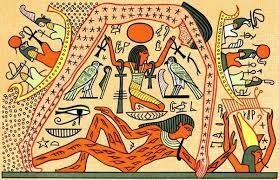

Mitología del antiguo egipto
La reencarnación
La religión egipcia influenció y fue influenciada por el resto de culturas orientales, ya que la ubicación de Alejandría en la Ruta de la Seda la convertía en un punto neurálgico del comercio y la transmisión de ideas. Pero si hay algo característico de esta mitología es su concepto de vida después de la muerte mediante la reencarnación, así como una serie de dioses benevolentes personificados en la figura del faraón. Y es que la religión egipcia, al igual que la romana y otras de su época, fue una religión imperial.
De esta forma, el alma del faraón podría escapar de la muerte si su cuerpo era embalsamado siguiendo unos rituales concretos. Le acompañarían en el más allá todo su séquito y riquezas, para que así tuviera compañía y lujos propios de su clase. La momificación es sin duda uno de los elementos más atractivos del mundo egipcio, aunque no es exclusivo de éste.
La creación del mundo
Existen distintas versiones de la creación del mundo en la religión egipcia, así que a continuación vamos a hablar del mito de Heliópolis, que es el más extendido. Al principio solo había tinieblas y aguas turbias, un océano infinito y primigenio que se conocía como Nun. No existían los dioses, el cielo o la tierra, la vida o la muerte. Solo un caos informe en el que se encontraba disperso el espíritu del mundo.
Poco a poco, este espíritu fue tomando consciencia y acabó convirtiéndose en Ra, el dios del Sol. Estaba muy solo, así que con su aliento creó a Shu (el viento) y con su saliva a Tefnut (la humedad). Les ordenó que morasen al otro extremo de Nun e hizo emerger la tierra seca, a la que llamó Egipto, y el Rio Nilo, que garantizaría su supervivencia.
A continuación, Ra creó la vida vegetal y animal para poblar Egipto, al tiempo que Shu y Nefnut engendraban a Geb y Nut, dioses de la tierra y el cielo que copulaban continuamente. Pero Shu estaba muy celoso de esta relación, así que decidió separar el cielo de la tierra con sus propios hombros.
Geb y Nut no sabían que había pasado, así que enviaron a uno de sus ojos para buscar a Shu y Nefnut. Pero cuando regresó, vio que otro ojo había ocupado su lugar. Desolado, el primero comenzó a llorar hasta que Amon Ra se apiadó de él y lo colocó en su frente, creando de esta manera el Sol.
Amon Ra recorre el cielo sobre una barca iluminando la tierra hasta llegar al Duat o Infierno, cuyas 12 puertas debe atravesar durante la noche. Al día siguiente se regenera y sigue su eterno viaje para mantener el orden cósmico. Y así comienza un ciclo de vida y muerte, de transformación y reencarnación tan característico de la mentalidad egipcia.
Los dioses egipcios
El panteón egipcio es desproporcionadamente enorme y poco homogéneo, ya que dependiendo de la época o la región, podemos encontrarnos deidades totalmente distintas. Además, estos dioses ganaban o perdían prestigio, adoptaban los rasgos unos de otros, cambiaban, se sincretizaban con otras culturas… Por ejemplo, Ra y Atón se transformaron en Atón-Ra, para posteriormente ser asimilados por Horus como Ra-Horajti.
La triada de dioses egipcios que más perduró en el tiempo fue la de Osiris, Isis y Horus, que coincidió con la etapa helenística. Incluso en esta época, Osiris sigue siendo un aspecto de Horus, tendencia que con el paso del tiempo llevó a los egipcios a coquetear con el monoteísmo. No era algo nuevo, el propio Akenatón ya lo había intentado en el siglo XIV antes de nuestra era, con la imposición del Culto al Sol.